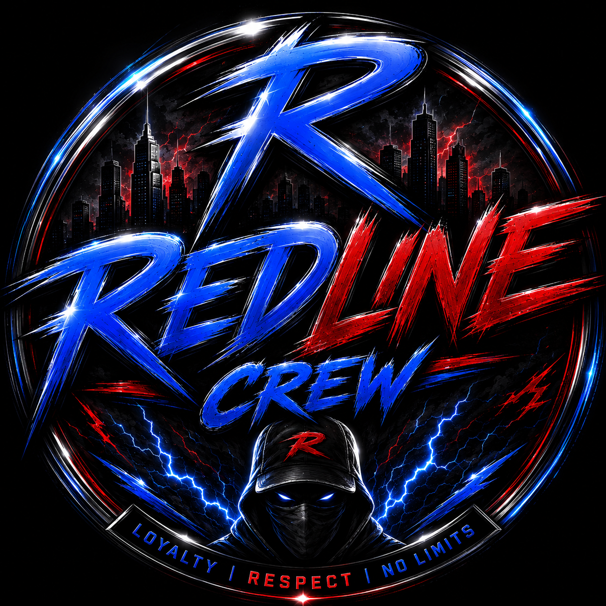

EXIGENCE
Faire les choses avec sérieux, précision et attention au détail.
AUTOMOTIVE CULTURE · WAREDOGS
La passion nous rassemble.
Le projet nous fait avancer.
Project Redline réunit des univers complémentaires autour d'une même ambition : faire grandir la culture automobile, accompagner les pilotes et construire une communauté qui laisse sa marque.
Deux entités. Deux identités. Une seule ligne de conduite.
De l'atelier aux circuits, des projets collectifs à celles et ceux qui les font vivre, Project Redline crée des passerelles entre mécanique, sport automobile et communauté. Chaque entité a son rôle. Ensemble, elles font avancer la même vision.
Découvrir les personnes derrière le projet ↗Explore les deux piliers de Project Redline et découvre ce qui les rend uniques.
MOTORSPORT · FEDERATION
Structurer le sport automobile, accompagner les pilotes et donner une place aux clubs, aux licences et aux compétitions.
DÉCOUVRIR LA FÉDÉRATION ↗
CREW · COMMUNITY
Une identité, un collectif et une passion commune. L'esprit d'équipe au cœur de chaque projet et de chaque virage.
RENCONTRER LE CREW ↗Un projet ne se construit pas uniquement avec des moteurs. Il se construit avec des personnes, des idées et l'envie de faire mieux à chaque étape.
Faire les choses avec sérieux, précision et attention au détail.
Faire avancer les individus en faisant grandir le collectif.
Poser des objectifs clairs et construire la suite étape par étape.
Garder l'automobile, le partage et l'expérience au centre du projet.
Un projet prend forme grâce à celles et ceux qui s'y investissent. Fais connaissance avec les membres, leurs rôles et les différentes entités de Project Redline.
Découvrir les membres ↗PROJECT REDLINE · WAREDOGS
Une vision commune. Trois univers. La suite s'écrit ensemble.